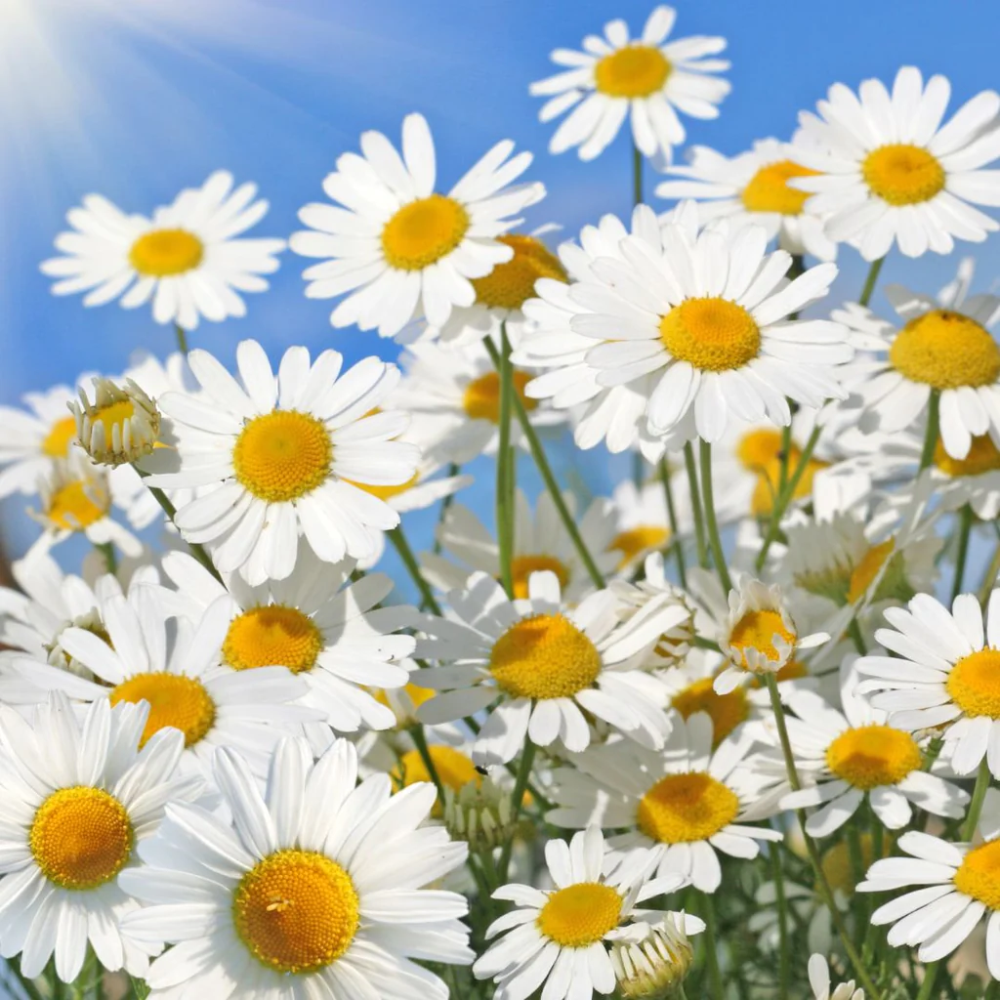

Dandelion (Taraxacum officinale).

Dandelion (Taraxacum officinale).
Rose (Rosa rubiginosa).
Milkweed (Asclepias curassavica).

Daisy (Bellis perennis).
Sunflower(Helianthus annuus).

Once a year. Pruning a rosebush is important, as it keeps the plant blooming and producing healthy and beautiful flowers.